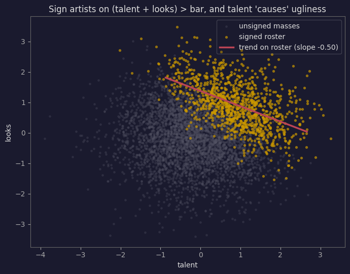

Catapulting into Causal Calculus, Part 2: Is Your Graph Even True? [CLAUDE’S DRAFT]
Unit tests for your DAG, Berkson at the record label, and an appendix in which the DAW turns out to be a do() machine.
causal
graphs
statistics
draft
Author
Claude (riffing on Scott H. Hawley’s Part 1)
Published
July 14, 2026
ImportantWhat this is
Claude’s exploratory draft, not Scott’s writing — a candidate shape for Part 2 of Causal Catapult, built around the question “someone hands you a causal graph — is it true?”, with the DAW-does-do() material as an appendix. New references.bib entries needed: @spirtes2000causation (Spirtes, Glymour & Scheines, Causation, Prediction, and Search, 2nd ed., MIT Press 2000 — the PC algorithm’s home), @berkson1946 (Berkson, Biometrics Bulletin 1946).
Previously, on Causal Catapult
Part 1 pulled a magic trick. We drew the “Reality” graph — Talent pointing at both Gear and Sound — applied the backdoor formula, and the seductive \(P(\mathrm{Great}\mid\mathrm{Fancy}) = 0.625\) collapsed to \(P(\mathrm{Great}\mid do(\mathrm{Fancy})) = 0.357\). GAS debunked, wallets saved.
But notice what we smuggled in: we just asserted that graph. The entire adjustment — which variable to condition on, which number comes out — hung on a picture I drew because it felt right. Draw a different picture, get a different “causal” answer, feel equally scientific. This is the dirty secret of applied causal inference: the formulas are rigorous, and the graph they operate on is vibes.1
So Part 2 asks the auditor’s question: given a proposed causal graph, can the data falsify it? This is not academic. It’s what an investor should do when an analyst pitches a thesis that is, on inspection, a causal graph (“founder pedigree → execution → returns”). It’s what you should do when a forum guru insists “converters → clarity → mix translation.” Everyone around you is proposing DAGs all day; they just draw them with words.
The punchline of this post: every DAG implies a checklist of statistical claims that must hold in any data it generated — a suite of unit tests for your causal model. Graphs that fail, die. Graphs that pass… well, that’s where it gets interesting, and where an appendix full of bypass buttons comes in.
The Three Pipe Fittings
A causal graph transmits statistical dependence the way plumbing transmits water, and there are exactly three fittings. Everything in this post — d-separation, the PC algorithm, all of it — is these three, composed:
fitting
shape
unconditioned
conditioned on B
chain
A → B → C
A, C dependent
blocked
fork
A ← B → C
A, C dependent
blocked
collider
A → B ← C
A, C independent
OPENED
Chains and forks behave like intuition says: dependence flows through, and conditioning on the middle pinches the hose. The collider is the one that breaks brains, so it gets the demo. Note the inversion: a collider transmits nothing until you condition on it, at which point it starts manufacturing dependence out of thin air. Let’s verify all three in silicon:
import numpy as npimport pandas as pdfrom scipy import statsrng = np.random.default_rng(0)N =5000# chain: A -> B -> CA = rng.standard_normal(N); B =0.8*A +0.6*rng.standard_normal(N)Cc =0.8*B +0.6*rng.standard_normal(N)# fork: D <- E -> FE = rng.standard_normal(N); D =0.8*E +0.6*rng.standard_normal(N)F =0.8*E +0.6*rng.standard_normal(N)# collider: G -> H <- IG = rng.standard_normal(N); I = rng.standard_normal(N)H =0.7*G +0.7*I +0.6*rng.standard_normal(N)def corr(x, y): return np.corrcoef(x, y)[0,1]def corr_given(x, y, z): # crude "conditioning": residualize on z rx = x - np.polyval(np.polyfit(z, x, 1), z) ry = y - np.polyval(np.polyfit(z, y, 1), z)return corr(rx, ry)print(f"chain A,C: r = {corr(A,Cc):+.3f} |B: r = {corr_given(A,Cc,B):+.3f} (blocked)")print(f"fork D,F: r = {corr(D,F):+.3f} |E: r = {corr_given(D,F,E):+.3f} (blocked)")print(f"collider G,I: r = {corr(G,I):+.3f} |H: r = {corr_given(G,I,H):+.3f} (OPENED!)")
chain A,C: r = +0.631 |B: r = -0.025 (blocked)
fork D,F: r = +0.643 |E: r = +0.027 (blocked)
collider G,I: r = +0.014 |H: r = -0.585 (OPENED!)
There it is in the last line: two independent variables (r ≈ 0) become strongly anti-correlated the moment you condition on their common effect. This isn’t a numerical artifact; it’s the fitting doing what the fitting does, and it has been ruining studies since before computers.
Berkson’s Paradox at the Record Label
Here’s the collider wearing a lanyard. Suppose Talent and Looks are dealt independently at birth — knowing one tells you nothing about the other. A label signs artists who score well on the sum: enough combined talent-plus-looks and you’re in. Now walk through the label’s roster and correlate talent with looks:
corr(talent, looks), everyone: +0.014
corr(talent, looks), signed only: -0.522

Zero correlation in the population; −0.52 on the roster. Every A&R veteran “knows” the gorgeous ones can’t sing and the virtuosos have faces for radio — and they’re not wrong about their roster, because the roster is a conditioned collider: Talent → Signed ← Looks, and being on the roster is conditioning on Signed. Nobody drew a causal arrow between talent and looks; the selection process drew a statistical one.2
This matters beyond jokes: conditioning is not always virtuous. Part 1 taught “adjust for the confounder”; the collider teaches that adjusting for the wrong thing creates the very spurious dependence you were trying to remove. Which raises the uncomfortable question this whole post exists to answer: adjust for what, according to which graph, and says who?
d-Separation: The Rule, and Why It’s a Gift
Compose the three fittings and you get the general law. A path between X and Y (ignore arrow directions when tracing; respect them when judging) is blocked by a conditioning set \(S\) if anywhere along it there’s
a chain or fork whose middle node is in\(S\), or
a collider whose middle node (and all its descendants) is not in\(S\).
X and Y are d-separated given \(S\) if every path between them is blocked — and the theorem (Pearl, Verma) says: d-separated in the graph ⟹ statistically independent in any data the graph generated.
Read that implication backwards and it becomes a weapon:
Every claimed causal graph implies a list of conditional independencies. Each one is a falsifiable prediction. If the data violates even one, the graph is wrong. The list is a unit-test suite for your causal model.
Note what we did not need: interventions, experiments, or a time machine. Purely observational data can execute the test suite. It can’t always tell you which graph is right (patience — that limit is coming, and it has a name), but it can tell you which graphs are dead, and in an argument about causality, “your model fails its own unit tests” is a kill shot.
First, the test itself. For jointly-Gaussian-ish data the workhorse is partial correlation — correlate X and Y after regressing both on \(S\) — with Fisher’s z-transform providing the p-value. Ten lines, no library:
def partial_corr(df, x, y, given=()):"""Correlation of x,y with the variables in `given` regressed out. One matrix inversion does all the regressions at once (precision matrix).""" Cm = np.corrcoef(df[[x, y, *given]].values.T) P = np.linalg.inv(Cm)return-P[0,1] / np.sqrt(P[0,0] * P[1,1])def ci_test(df, x, y, given=(), alpha=0.01):"""Fisher z: is x independent of y given `given`? -> (verdict, r, p)""" r = partial_corr(df, x, y, given) z =0.5*np.log((1+r)/(1-r)) * np.sqrt(len(df) -len(given) -3) p =2*(1- stats.norm.cdf(abs(z)))return p > alpha, r, p
NoteFine print, briefly
Partial correlation only detects linear dependence; nonlinear relationships need fancier CI tests (kernel-based, mutual-information-based). The logic of everything below is identical — only the test statistic swaps out. We’ll stay linear and Gaussian so the machinery stays see-through.
The Showdown: Three Theories of GAS Walk Into a Bar
Time to put real graphs on trial. Here’s a continuous version of the GAS universe — same structure as Part 1’s “Reality,” and note the edge that isn’t there: in this world, gear truly does nothing.
All three pairwise correlations are strong and positive. Now, three rival theories, each a perfectly sincere causal graph somebody actually holds:
H_GAS (the forum guru): Talent → Gear → Sound. Talented people buy gear, and the gear makes the sound. “It’s all signal chain, man.”
H_pure (the conservatory purist): Gear ← Talent → Sound. Talent drives both; the gear is jewelry.
H_flex (the influencer): Talent → Sound → Gear. Sounding great gets you paid and sponsored, and that buys the gear.
Each graph stakes its life on one conditional independence — the pair it claims is d-separated, given the middle node:
theory
graph
unit test it must pass
H_GAS
Talent → Gear → Sound
Talent ⊥ Sound | Gear
H_pure
Gear ← Talent → Sound
Gear ⊥ Sound | Talent
H_flex
Talent → Sound → Gear
Talent ⊥ Gear | Sound
Run the suite:
suite = [("H_GAS : Talent ⊥ Sound | Gear ", ('Talent','Sound',('Gear',))), ("H_pure : Gear ⊥ Sound | Talent ", ('Gear','Sound',('Talent',))), ("H_flex : Talent ⊥ Gear | Sound ", ('Talent','Gear',('Sound',)))]for name, (x, y, S) in suite: ok, r, p = ci_test(d, x, y, S)print(f"{name} partial r = {r:+.3f}, p = {p:.1e} -> {'PASS ✓'if ok else'FAIL ✗'}")
H_GAS : Talent ⊥ Sound | Gear partial r = +0.655, p = 0.0e+00 -> FAIL ✗
H_pure : Gear ⊥ Sound | Talent partial r = +0.013, p = 3.7e-01 -> PASS ✓
H_flex : Talent ⊥ Gear | Sound partial r = +0.597, p = 0.0e+00 -> FAIL ✗
Two theories dead on arrival. H_GAS claimed that once you know the gear, talent tells you nothing more about the sound — the data laughs (partial r = 0.66). H_flex claimed that once you know how someone sounds, their talent tells you nothing about their gear pile — also laughable (0.60). H_pure’s prediction — knowing talent, the gear tells you nothing about sound — holds at partial r = 0.003. The purist walks out of the bar alive.
And notice what just happened rhetorically: nobody argued about mechanisms, anecdotes, or that one Grammy winner who records on a laptop mic. The graphs made falsifiable claims; the data executed them. This is the “business intelligence” version of causal inference: due diligence on the arrows.
Two pieces of fine print before anyone gets cocky:
The unfalsifiable graph. A fourth theory — Talent → Gear, Talent → Sound, andGear → Sound — implies no independencies at all, so it passes every test vacuously. Fully-connected graphs are the astrology of causal modeling: compatible with everything, informative about nothing. This is why the field prizes minimality (Part 1’s glossary owed you a definition: every edge must earn its keep — prefer the graph with the fewest arrows that still fits). H_pure fits with two edges; the kitchen-sink graph needs three. Occam wins the tiebreak.
Passing ≠ true. H_pure survived its test; that’s survival, not coronation. Which brings us to the honest limit of this whole enterprise…
Markov Equivalence: The Wall at the End of Observation
Consider two graphs of a musician’s development:
Practice → Talent → Sound (practice builds talent, talent makes sound), and
Sound → Talent → Practice (sounding good… causes talent… which causes practice?).
The second is causally deranged. But run the unit tests: both are chains through Talent, so both imply exactly one independence — Practice ⊥ Sound | Talent — and nothing else. Identical test suites. Identical fingerprints in data:
r = np.random.default_rng(7)practice = r.standard_normal(5000)tal =0.8*practice +0.6*r.standard_normal(5000)snd =0.9*tal +0.5*r.standard_normal(5000)dm = pd.DataFrame({'Practice':practice, 'Talent':tal, 'Sound':snd})ok, rr, p = ci_test(dm, 'Practice', 'Sound', ('Talent',))print(f"Practice ⊥ Sound | Talent: partial r = {rr:+.3f}, p = {p:.2f} -> {'PASS'if ok else'FAIL'}")print("...and the reversed chain implies the *same* test. Observation cannot tell them apart.")
Practice ⊥ Sound | Talent: partial r = -0.024, p = 0.10 -> PASS
...and the reversed chain implies the *same* test. Observation cannot tell them apart.
Graphs that share a test suite form a Markov equivalence class, and no amount of observational data — not more samples, not better tests, not a deep net — can separate members of the same class. Chains and forks all shuffle into the same classes; the only structure that observational data can orient on its own is (drum roll) the collider, because A → B ← C implies a different suite (A ⊥ C, but A ⊥̸ C | B) than any chain or fork on the same three nodes. The pathological fitting turns out to be the informative one. The trickster god of causal inference has a sense of humor.
To break ties within a class, you need rung two of the ladder: reach in and wiggle something. Force practice hours and watch sound respond; force sound (miming to a backing track, say) and watch talent stubbornly not appear. That’s an intervention — a do() — and it happens that audio engineers own the world’s most convenient do()-operator. See the Appendix, which this post has been secretly building toward.
But first: if unit tests can kill graphs, can they search for survivors automatically?
The PC Algorithm: Run All the Tests, Keep the Survivors
The PC algorithmspirtes2000causation? is the industrialization of everything above: start from the fully-connected graph (assume everything causes everything, like a conspiracy theorist), then delete every edge you can find an alibi for — an independence test that separates the pair. What survives is the skeleton; then orient every collider you can prove (the only arrows observation grants you).
We’ll feed it a four-variable world. Same GAS universe plus Fame, which is caused by both Sound and Gear — sounding great gets you noticed, and let’s be honest, so does a wall of modular synth behind you on stage. That makes Fame a collider: Gear → Fame ← Sound.
def gas_fame_world(N=8000, seed=0, hide_talent=False): r = np.random.default_rng(seed) talent = r.standard_normal(N) gear =0.8*talent +0.6*r.standard_normal(N) sound =0.9*talent +0.6*r.standard_normal(N) fame =0.7*sound +0.7*gear +0.6*r.standard_normal(N) # the collider df = pd.DataFrame({'Talent':talent, 'Gear':gear, 'Sound':sound, 'Fame':fame})return df.drop(columns=['Talent']) if hide_talent else dffrom itertools import combinationsdef pc_skeleton(df, alpha=0.01, max_k=2):"""Start fully connected; delete any edge with an alibi (a separating set).""" V =list(df.columns) adj = {v: set(V) - {v} for v in V} seps = {}for k inrange(max_k +1): # try alibis of growing sizefor x in V:for y inlist(adj[x]): candidates = adj[x] - {y}iflen(candidates) < k: continuefor S in combinations(sorted(candidates), k): indep, _, _ = ci_test(df, x, y, S, alpha)if indep: # alibi found: delete edge adj[x].discard(y); adj[y].discard(x) seps[frozenset((x, y))] =set(S)break edges = {frozenset((x, y)) for x in V for y in adj[x]}return edges, sepsdef orient_colliders(edges, seps, V):"""x - z - y with x,y non-adjacent and z NOT in their alibi => x -> z <- y""" arrows =set()for z in V: nbrs = [v for v in V iffrozenset((v, z)) in edges]for x, y in combinations(nbrs, 2):iffrozenset((x, y)) notin edges and z notin seps.get(frozenset((x, y)), set()): arrows.add((x, z)); arrows.add((y, z))return arrowsdf4 = gas_fame_world()edges, seps = pc_skeleton(df4)arrows = orient_colliders(edges, seps, list(df4.columns))print("skeleton found: ", sorted(tuple(sorted(e)) for e in edges))print("arrows oriented:", sorted(arrows))
Read that output slowly, because a for-loop just did epistemology. From correlations alone, ~40 lines of code recovered the exact skeleton — including the absence of a Gear–Sound edge, i.e., it discovered that gear doesn’t cause sound — and it oriented Gear → Fame ← Sound, arrows and all, because colliders leave fingerprints. It could not orient the Talent edges (they’re Markov-equivalent both ways, as promised), and honesty about what you can’t know is a feature.
The collider-orientation logic deserves one sentence of appreciation: Gear and Sound got separated without needing Fame in the alibi (Talent alone sufficed) — and when the middle of a path isn’t needed in the alibi, it must be a collider. The algorithm orients arrows by noticing which conditioning sets it didn’t need. Sherlock would approve.
Now Watch It Lie
Every guarantee above leans on causal sufficiency: all common causes are measured. Here’s its villain-origin story. Same world, but nobody exported the talent track:
df3 = gas_fame_world(hide_talent=True)edges3, seps3 = pc_skeleton(df3)arrows3 = orient_colliders(edges3, seps3, list(df3.columns))print("skeleton found: ", sorted(tuple(sorted(e)) for e in edges3))print("arrows oriented:", sorted(arrows3))
With Talent hidden, PC confidently reports a Gear–Sound edge that does not exist — the latent confounder’s correlation has nowhere to go, so the algorithm draws it as structure. Worse, the phantom edge makes Gear and Sound adjacent, so the collider fingerprint at Fame is destroyed too: all the arrows vanish. One missing variable didn’t just add one wrong edge; it poisoned the whole graph.
WarningThe investment-committee version
An analyst’s thesis graph can pass every unit test you’re able to run and still be wrong, if the true driver isn’t in anyone’s dataset. “Founder pedigree → returns” passes beautifully when the latent variable is “the kind of market access that gets you both pedigree and returns.” Graph testing is due diligence, not clairvoyance: it reliably kills bad graphs, and it certifies survivors only up to the variables you measured. The most valuable output of the whole exercise is often the argument about what’s missing from the dataset — which no algorithm has ever supplied.
There are algorithms that at least admit latent confounders might exist and mark edges as “could be confounded” (FCI and friends) — a story for another post.
Interactive: The Conditioning Console
Since this series is contractually obligated to be interactive: below is the four-node GAS+Fame world as a switchboard. The question on trial is Gear ⊥ Sound? There are two paths between them — the fork through Talent and the collider through Fame. Click Talent or Fame to toggle conditioning and watch each path open (red) or block (grey); the verdict shows both the theory (d-separation) and the measured partial correlation from the simulated data above. Note the trap state: condition on both and you’ve blocked the real path while prying open the fake one — manufacturing a correlation of −0.32 between two variables with no causal connection. More conditioning is not more virtue.
from IPython.display import HTML# measured partial correlations, computed live from df4 so the widget never lies:pr = {"none": partial_corr(df4,'Gear','Sound'),"talent": partial_corr(df4,'Gear','Sound',('Talent',)),"fame": partial_corr(df4,'Gear','Sound',('Fame',)),"talent+fame": partial_corr(df4,'Gear','Sound',('Talent','Fame'))}HTML(f"""<div id="ccons" style="width:640px;max-width:100%;background:#1a1a2e;border:1px solid #444; border-radius:8px;padding:14px;font-family:ui-monospace,monospace;color:#ddd"> <div style="font-size:13px;margin-bottom:6px">ON TRIAL: <b>Gear ⊥ Sound ?</b> <span style="color:#888">(click Talent / Fame to condition)</span></div> <svg id="ccsvg" viewBox="0 0 620 260" width="100%"></svg> <div id="ccverdict" style="font-size:13px;margin-top:6px"></div></div><script>(function() {{ const PR = {{ "none": {pr['none']:.3f}, "talent": {pr['talent']:.3f}, "fame": {pr['fame']:.3f}, "talent+fame": {pr['talent+fame']:.3f}}}; const nodes = {{ Talent: {{x:310, y:52, c:"#4477AA", cond:false, click:true}}, Gear: {{x:110, y:135, c:"#AA3377", cond:false, click:false}}, Sound: {{x:510, y:135, c:"#228833", cond:false, click:false}}, Fame: {{x:310, y:218, c:"#6c3483", cond:false, click:true}}}}; const svg = document.getElementById("ccsvg"), NS = "http://www.w3.org/2000/svg"; function E(t, a, p) {{ const e = document.createElementNS(NS, t); for (const k in a) e.setAttribute(k, a[k]); (p||svg).appendChild(e); return e; }} function render() {{ svg.innerHTML = ""; const defs = E("defs", {{}}); for (const [id, col] of [["aG","#8a8ab0"],["aR","#e0567f"],["aD","#555"]]) {{ const m = E("marker", {{id:id, viewBox:"0 -5 10 10", refX:9, refY:0, markerWidth:6, markerHeight:6, orient:"auto"}}, defs); E("path", {{d:"M0,-5L10,0L0,5", fill:col}}, m); }} const forkOpen = !nodes.Talent.cond; // fork blocked iff Talent in S const collOpen = nodes.Fame.cond; // collider open iff Fame in S // fork path: Gear <- Talent -> Sound drawPath([[nodes.Gear, nodes.Talent, true], [nodes.Talent, nodes.Sound, false]], forkOpen, "fork via Talent", 24); // collider path: Gear -> Fame <- Sound drawPath([[nodes.Gear, nodes.Fame, false], [nodes.Sound, nodes.Fame, false]], collOpen, "collider via Fame", 236); for (const [name, n] of Object.entries(nodes)) {{ const g = E("g", {{style: n.click ? "cursor:pointer" : ""}}); E("circle", {{cx:n.x, cy:n.y, r:26, fill:n.c, stroke:"#fff", "stroke-width":1.2}}, g); if (n.cond) E("circle", {{cx:n.x, cy:n.y, r:32, fill:"none", stroke:"#CC9900", "stroke-width":2.5, "stroke-dasharray":"4 4"}}, g); const t = E("text", {{x:n.x, y:n.y+4, "text-anchor":"middle", fill:"#fff", "font-size":11}}, g); t.textContent = name; if (n.click) g.addEventListener("click", () => {{ n.cond = !n.cond; render(); }});}} const key = (nodes.Talent.cond ? (nodes.Fame.cond ? "talent+fame" : "talent") : (nodes.Fame.cond ? "fame" : "none")); const dep = forkOpen || collOpen; const S = [nodes.Talent.cond ? "Talent" : null, nodes.Fame.cond ? "Fame" : null] .filter(Boolean).join(", ") || "∅"; document.getElementById("ccverdict").innerHTML = `given S = {{${{S}}}} → d-separation says: <b style="color:${{dep ? '#e0567f' : '#3fae5c'}}">`+ `${{dep ? "DEPENDENT" : "INDEPENDENT"}}</b>` + ` · measured partial r = <b>${{PR[key] >= 0 ? "+" : ""}}${{PR[key].toFixed(3)}}</b>` + (key === "talent+fame" ? ` <span style="color:#CC9900">← you built this correlation yourself</span>` : "");}} function drawPath(segs, open, label, ly) {{ const col = open ? "#e0567f" : "#555", mk = open ? "aR" : "aD"; for (const [a, b] of segs) {{ const dx = b.x - a.x, dy = b.y - a.y, d = Math.hypot(dx, dy), ux = dx/d, uy = dy/d; E("line", {{x1:a.x + ux*28, y1:a.y + uy*28, x2:b.x - ux*31, y2:b.y - uy*31, stroke:col, "stroke-width": open ? 3 : 2, "stroke-dasharray": open ? "none" : "3 6", "marker-end":`url(#${{mk}})`}});}} const t = E("text", {{x:14, y:ly, fill:col, "font-size":11}}); t.textContent = (open ? "OPEN — " : "blocked — ") + label;}} render();}})();</script>""")
ON TRIAL: Gear ⊥ Sound ?(click Talent / Fame to condition)
Appendix: The DAW Does do()
Everything above was rung one of Pearl’s ladder — clever things done to observations. This appendix is about the day I realized audio engineers have been standing on rung two the whole time without noticing, because the bypass button is a do() operator with a GUI.
Think about what do(X = x) means formally: delete X’s structural assignment — sever every arrow into X — and hard-code the value, leaving downstream mechanisms untouched. Now think about what BYPASS does: it doesn’t care why the compressor was inserted (the mix was dense, the client insisted, you were feeling insecure) — it severs all of that history and forces comp := off, leaving the rest of the signal chain to respond naturally. An A/B bypass test is a two-arm randomized experiment on your own mix. Engineers run dozens a day and call it “checking.”
Why does that matter? Because your session archive — observational data — will lie to you about your own tools, via the exact confounding this series keeps meeting. You reach for the compressor when the mix is dense, and dense mixes rate worse. Watch the archive frame an innocent plugin:
def sessions(N=20000, seed=0, do_comp=None): r = np.random.default_rng(seed) density = r.standard_normal(N) # how busy is the mix comp = (density +0.5*r.standard_normal(N) >0.3) if do_comp isNone\else np.full(N, do_comp, dtype=bool) # engineers compress busy mixes rating =-0.8*density +0.3*comp +0.5*r.standard_normal(N) # TRUE comp effect: +0.3return pd.DataFrame({'density':density, 'comp':comp, 'rating':rating})arch = sessions() # the observational archiveobs = arch[arch.comp]['rating'].mean() - arch[~arch.comp]['rating'].mean()ab_on = sessions(seed=1, do_comp=True )['rating'].mean() # the bypass A/B: do(comp)ab_off = sessions(seed=1, do_comp=False)['rating'].mean()arch['dbin'] = pd.qcut(arch['density'], 10) # backdoor: stratify by densitypz = arch['dbin'].value_counts(normalize=True, sort=False)e1 = arch[arch.comp ].groupby('dbin', observed=False)['rating'].mean()e0 = arch[~arch.comp].groupby('dbin', observed=False)['rating'].mean()print(f"Session archive says compression is 'worth' {obs:+.3f} <- a full sign error")print(f"Bypass A/B — do(comp) — says {ab_on-ab_off:+.3f} <- truth (+0.3 by construction)")print(f"Backdoor on the archive (adjust for density) {((e1-e0)*pz).sum():+.3f} <- Part 1's formula, redeemed")
Session archive says compression is 'worth' -0.838 <- a full sign error
Bypass A/B — do(comp) — says +0.300 <- truth (+0.3 by construction)
Backdoor on the archive (adjust for density) +0.261 <- Part 1's formula, redeemed
The archive doesn’t just shrink the effect — it flips its sign. Judged observationally, your best tool looks like sabotage, because it only shows up at crime scenes. The bypass test cuts the density → comp arrow and acquits it; the backdoor formula recovers nearly the same verdict from the archive alone, if you know to adjust for density — that is, if you have the right graph. Which, after this post, you know how to audit. The series eats its own dogfood.
And the Markov-equivalence wall from earlier? The bypass button is the battering ram. Practice → Talent → Sound vs. its deranged reversal pass identical unit tests, but do(Sound) — miming to a track, quantizing a bad take into “perfection” — produces no talent downstream, while do(Practice) eventually does. Where observation ends, intervention answers. Rung two is a bypass button; rung one is a very good listen.
One Rung Further: The Counterfactual Bounce
There’s a question the bypass button cannot answer, because it lives on rung three: “That take was bad — would it have been bad on the old mic?” Not “what do takes on the old mic sound like on average” (rung two), but what would this take, with this performance and this room, have been. The DAW can’t A/B the past. An SCM can, via Pearl’s three-step abduction–action–prediction:
# SCM for one take: rating := 0.9*skill + 0.4*mic − 0.8*density + noiseskill, density, mic_fancy =0.2, 1.8, 1.0# the session as it happenedrating_obs =-1.360# ...and it sounded like ass# 1. ABDUCTION: infer this take's noise term (everything the model doesn't name:# the room that day, your ears that day, the drummer's breakup)noise_hat = rating_obs - (0.9*skill +0.4*mic_fancy -0.8*density)# 2. ACTION: swap the mic in the model 3. PREDICTION: replayrating_cf =0.9*skill +0.4*0.0-0.8*density + noise_hatprint(f"observed rating (fancy mic): {rating_obs:+.3f}")print(f"counterfactual rating (SM57): {rating_cf:+.3f}")print(f"the mic was worth exactly: {rating_obs - rating_cf:+.3f} ...on THIS take")
observed rating (fancy mic): -1.360
counterfactual rating (SM57): -1.760
the mic was worth exactly: +0.400 ...on THIS take
Step 1 is the magic: the observed outcome lets you solve for the noise — the take’s unrepeatable circumstances — and step 3 replays those exact circumstances through an altered mechanism. The DAW gives you rungs one and two for free; rung three requires owning the model. (It also requires the model to be right, which, after 4,000 words about auditing graphs, is a caveat you’re now equipped to take seriously.) The engineer’s eternal 2am question — “was it the mic, or was it me?” — turns out to be well-posed. The answer, statistically and in my experience, is that it was you.3
Glossary (Growing)
Term
Definition
collider
A → B ← C. Transmits nothing until conditioned on, then manufactures dependence. See: every roster, every “survivor” dataset, your conditioning-console widget above.
d-separation
The path-blocking rule that converts a graph into its list of implied conditional independencies.
unit tests for a DAG
Those implied independencies, treated as falsifiable predictions. Graphs that fail, die.
Markov equivalence class
Graphs sharing an identical test suite. Observation can’t separate them; interventions can.
PC algorithm
Start fully connected, delete every edge with an independence alibi, orient the colliders. Honest about what it can’t orient.
causal sufficiency
“All common causes are measured.” The assumption whose failure makes PC hallucinate edges.
minimality
Every edge must earn its keep; among graphs that pass, prefer the fewest arrows. The kitchen-sink graph passes everything and means nothing.
do(X)
Sever all arrows into X, force the value, let downstream respond. Ships in every DAW as BYPASS.
abduction–action–prediction
Rung 3: infer this instance’s noise, edit the mechanism, replay. The counterfactual bounce.
Where Next
The dangling threads, ranked by itch: (1) FCI — the discovery algorithm that admits latent confounders exist; (2) front-door adjustment — identifying an effect through a mediator when the backdoor can’t be closed (the one adjustment Part 1’s TODO still owes); (3) nonlinear CI tests, so the unit-test suite works on audio features and not just Gaussians; (4) time series, done right-sized: not Granger worship, just “the graph now has a time index, the unit tests come per lag.”
References
Draft by Claude for Scott H. Hawley, July 2026. All numbers produced by executing this notebook; the PC algorithm really does recover (and really does hallucinate) what the text claims.
Footnotes
Respectable vibes! Domain knowledge, mechanism, temporal order. But vibes, untested, until now.↩︎
The same fitting explains why the restaurants in great locations have mediocre food (surviving restaurants = conditioned on Location + Food > rent), and why “hot streak” fund managers underperform after you invest (funds you hear about = conditioned on past returns + marketing). Once you see colliders you cannot stop seeing them, and you become insufferable at parties. Welcome.↩︎
It’s always you. Buy the mic anyway; morale is a confounder too.↩︎